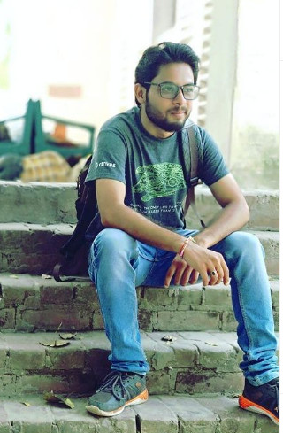

I'm Really Curious, a Mechanical Engineer, a Data Scientist, an Innovator, a Machine Learning Engineer, a Programmer.

I am a really curious person who has completed his B.E through mechanical engineering. I am working in the Automobile Industry and I love programing in python and innovative machine learning. I have done some courses in python and machine learning on coursera. Jupyter Notebook is my weapon of choice. My hobbies are simple like traveling, trying new things, going to new places and exploring new things.
Programming taught me never to give up if things don't work out first time, and to just keep trying again and again with different solutions and ask others how can they help me solve the problem.
Bachelor of Engineering – Mechanical
Don Bosco Institute of Technology, Bangalore (2014–2018)
Wendy High School, Kanpur (ISC) – 10th & 12th – 75%
Graduate Engineering Trainee – UNOMINDA
Process engineering, assembly line setup, PFMEA, OGS, SAP procurement,
vendor coordination.
Email: sid124557@gmail.com
Phone: +91 6394637912
Location: Haryana, Uttar Pradesh, Bangalore